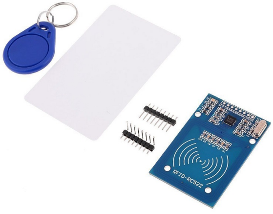

注釈
こんにちは、SunFounderのRaspberry Pi & Arduino & ESP32愛好家コミュニティへようこそ！Facebook上でRaspberry Pi、Arduino、ESP32についてもっと深く掘り下げ、他の愛好家と交流しましょう。
参加する理由は？
エキスパートサポート：コミュニティやチームの助けを借りて、販売後の問題や技術的な課題を解決します。
学び＆共有：ヒントやチュートリアルを交換してスキルを向上させましょう。
独占的なプレビュー：新製品の発表や先行プレビューに早期アクセスしましょう。
特別割引：最新製品の独占割引をお楽しみください。
祭りのプロモーションとギフト：ギフトや祝日のプロモーションに参加しましょう。
👉 私たちと一緒に探索し、創造する準備はできていますか？[ここ]をクリックして今すぐ参加しましょう！
2.2.7 MFRC522 RFIDモジュール
前書き
無線周波数識別（RFID）は、オブジェクト（またはタグ）と質問デバイス（またはリーダー）の間の無線通信を使用して、そのようなオブジェクトを自動的に追跡したり識別したりする技術を指す。
この技術の最も一般的なアプリケーションには、小売サプライチェーン、軍事サプライチェーン、自動決済方法、荷物の追跡と管理、ドキュメントの追跡と医薬品管理などが含まれておる。
このプロジェクトでは、読み取りと書き込みにRFIDを使用する。
部品

原理
RFID
無線周波数識別（RFID）は、オブジェクト（またはタグ）と質問デバイス（またはリーダー）の間の無線通信を使用して、 そのようなオブジェクトを自動的に追跡したり識別したりする技術を指す。 タグの送信範囲はリーダーから数メートルに制限されている。 リーダーとタグの間の明確な見通し線は必ずしも必要ではない。
ほとんどのタグには、少なくとも1つの集積回路（IC）とアンテナが含まれている。 マイクロチップは情報を保存し、リーダーとの無線周波数（RF）通信を管理する。 パッシブタグは独立したエネルギー源を持たず、リーダーによって提供される外部電磁信号に依存して動作する。 しかしアクティブタグバッテリーなどの独立したエネルギー源が含まれている。 したがって、処理、送信機能と範囲が拡大している可能性がある。
MFRC522
MFRC522は、読み取りと書き込みカードチップの一種である。通常、13.56MHzの無線で使用される。NXP Companyによって発売された低電圧、低コスト、小型の非接触カードチップであり、インテリジェント機器と持ち転びやすい手持ちデバイスの最良の選択である。
MF RC522はすべてのタイプの13.56MHzパッシブ非接触通信方法とプロトコルで完全に開示された高度な変調と復調の概念を使用している。 さらに、MIFARE製品を検証するための高速CRYPTO1暗号化アルゴリズムをサポートしている。 MFRC522は最大424kbit/sの双方向データ伝送速度で、MIFAREシリーズの高速非接触通信もサポートしている。 13.56MHz高集積リーダーカードシリーズの新しいメンバーとして、MF RC522は既存のMF RC500とMF RC530と非常に似ているが、多くの違いがある。 配線が少ないシリアル方式でホストマシンと通信する。SPI、I2C、とシリアルUARTモード（RS232に類似）から選択できる。 これにより、接続の削減、PCBボードスペースの節約（サイズの縮小）、およびコストの削減に役立つ。
回路図

実験手順
ステップ1： 回路を作る

ステップ2： SPI設定 (SPIを設定している場合は、このステップをスキップしてください。)
ステップ3： コードのフォルダーに入る。
cd ~/davinci-kit-for-raspberry-pi/c/2.2.7/
ステップ4： コードをコンパイルする。
make read
make write
注釈
カードIDの読み取りまたは書き込みには二つの例があり、必要に応じていずれかを選択できる。
ステップ5: ./write を実行後、相手の名前などの情報を入力し、MRC522モジュールにタグやカードを置いて書き込みが完了するのを待ちます。
sudo ./write
ステップ6: ./read を実行して、書き込んだタグまたはカードの情報を読み取ります。
sudo ./read
コードの説明
InitRc522();
この関数はRFID RC522モジュールを初期化するために使用される。
uint8_t read_card_data();
この関数はカードのデータを読み取るために使用され、読み取りが成功すると「1」が返されます。
uint8_t write_card_data(uint8_t *data);
この関数はカードのデータを書き込むために使用され、書き込みが成功すると「1」を返します。 *data は、カードに書き込まれる情報です。